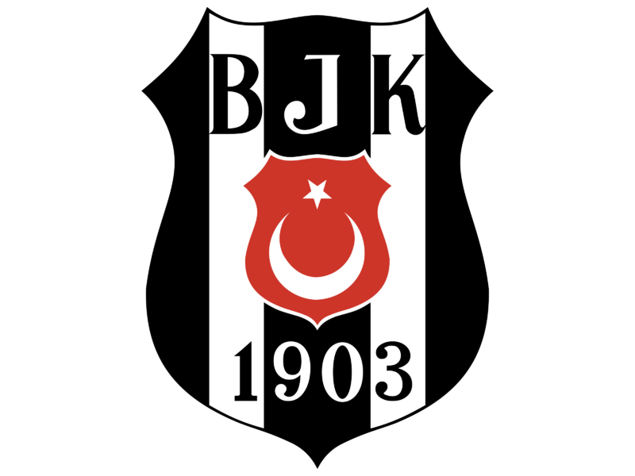
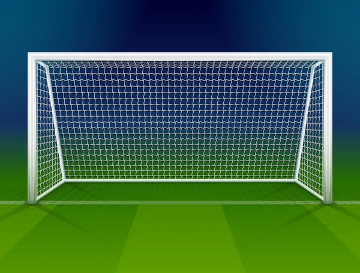

Beşiktaş'ın Bu Sezon Ligde Kazandığı Maç Sayısı:
9
Galibiyetlerin 5 Tanesi İç Sahada Olurken 4 Tanesi Deplasmanda Olmuştur.
Beşiktaş'ın Bu Sezon Ligde Kaybettiği Maç Sayısı:
7
Mağlubiyetlerin 3 Tanesi İç Sahada Olurken 4 Tanesi Deplasmanda Olmuştur.
Beşiktaş'ın Bu Sezon Ligde Berabere Kaldığı Maç Sayısı:
2
Beraberliklerin 1 Tanesi İç Sahada Olurken Diğeri Deplasmanda Olmuştur.
Beşiktaş'ın Bu Sezon Ligde Attığı Gol Sayısı:
26
Atılan Gollerin 13 Tanesi İç Sahada Olurken Diğer 13 Tanesi Deplasmanda Olmuştur.
Beşiktaş'ın Bu Sezon Ligde Yediği Gol Sayısı:
26
Yenilen Gollerin 11 Tanesi İç Sahada Olurken 15 Tanesi Deplasmanda Olmuştur.
Beşiktaş'ın Bu Sezon Ligde Aldığı Kırmızı Kart Sayısı:
2
Beşiktaş'ın Bu Sezon Ligde Aldığı Sarı Kart Sayısı:
40
Beşiktaş'ın Bu Sezon Ligde Kullandığı Penaltı Sayısı:
4

